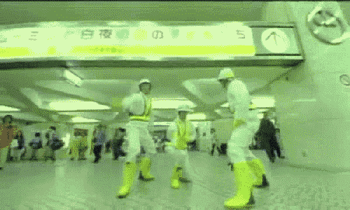

"Intergalactic" - Beastie Boys
"Intergalactic" is a song by American rap rock group Beastie Boys. "Intergalactic" was released as the first single from their fifth studio album, Hello Nasty, on June 22, 1998. The single reached number 28 on the US Billboard Hot 100, making it the band's third top-40 single, and reached number five on the UK Singles Chart, where it remains the band's biggest hit. It received a Grammy Award for Best Rap Performance by a Duo or Group in 1999. The "Intergalactic" video was made in June 1998. It was directed by Adam Yauch under the pseudonym Nathanial Hörnblowér,[2] and it revolves around a giant robot causing destruction by fighting a giant octopus-headed creature in a city while popping, a parody of, or tribute to, Japanese Kaiju films (specifically the series finale of Johnny Sokko and his Flying Robot). Various scenes are filmed in the Shibuya and Shinjuku train stations in Tokyo, Japan. Throughout the video, the band wear bright uniforms of (Koji) Japanese street construction workers. The video was a regular on Total Request Live and won the award for Best Hip-Hop Video at the 1999 MTV Video Music Awards.
